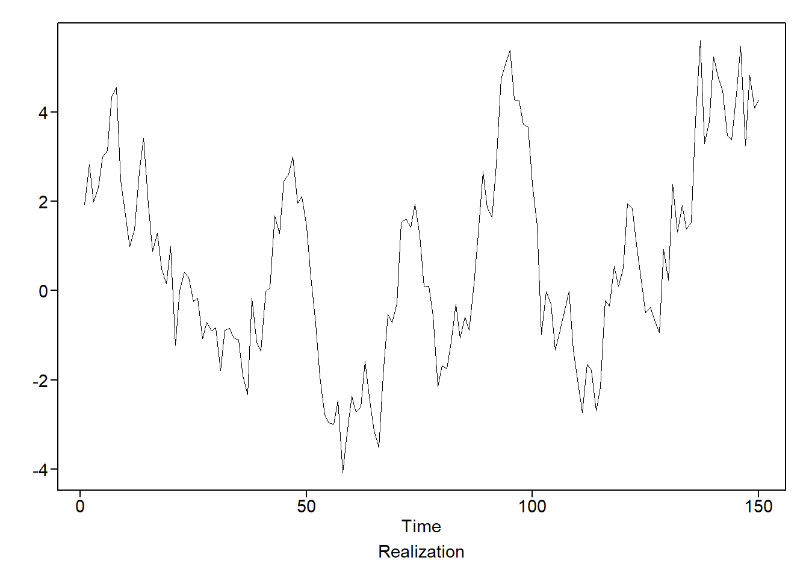
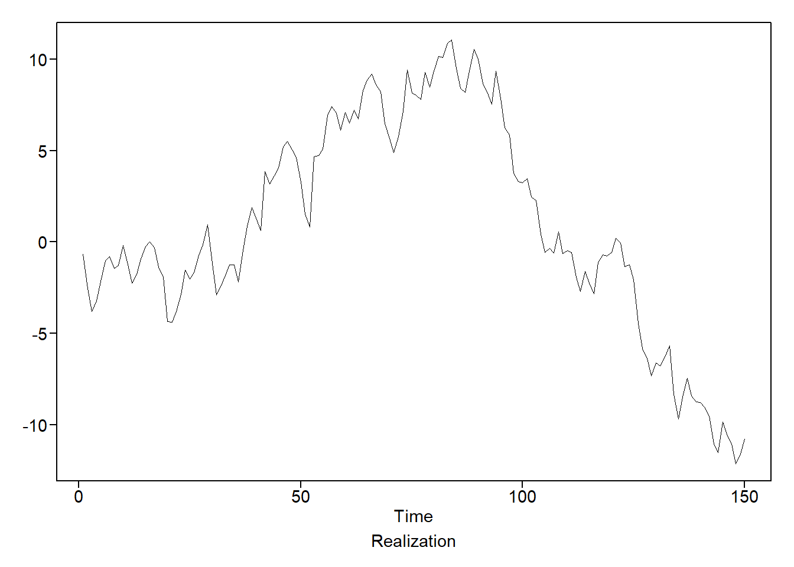
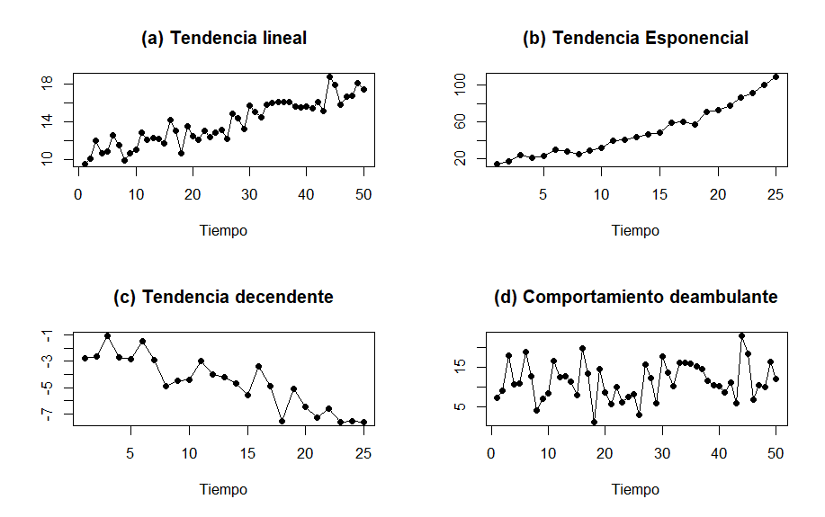

4 Series de tiempo
El surgimiento del análisis de series temporales se originó a partir de la necesidad de comprender y prever fenómenos que evolucionan con el tiempo. Este tipo de análisis tiene sus raíces en las primeras civilizaciones que registraron datos relacionados con fenómenos astronómicos y económicos. Un ejemplo de ello son los antiguos babilonios, quienes mantenían registros detallados de los movimientos planetarios, lo que les permitió identificar patrones cíclicos. De manera similar, los astrónomos griegos, como Hiparco y Ptolomeo, llevaron a cabo observaciones sistemáticas que contribuyeron al descubrimiento de ciclos en los movimientos celestes.
A inicios del siglo XX, el economista británico Sir Arthur Bowley y el estadístico ruso Andrey Kolmogorov realizaron importantes aportes al campo del análisis de series temporales. Bowley, en su obra (Bowley 1926), utilizó gráficos para representar datos de series temporales y analizar las tendencias económicas. Por su parte, Kolmogorov, en su estudio (Kolmogorov 1941), desarrolló teorías matemáticas fundamentales sobre los procesos estocásticos, que resultaron cruciales para el análisis de series temporales.
En esta sección, se iniciará presentando la definición formal de serie de tiempo como un caso particular de un proceso estocástico, junto con sus propiedades, las cuales son fundamentales para el desarrollo posterior de los temas.
4.0.1 Serie de tiempo
Definición 4.1 Una serie de tiempo \(\{X_t\}\) donde \(t\) denota el tiempo, es una realización de un proceso estocástico \(\{X_t(\omega)\}\) donde \(\omega\) pertenece al espacio de probabilidad. Cada \(X_t\) representa un valor de la variable en el tiempo \(t\), y su comportamiento es determinado por una distribución de probabilidad.
El espacio parametral T puede toma valores dos formas principales dependiendo del tipo de proceso. Si \(T\) es un conjunto discreto de valores, como \(T= \{0,1,2,3 \}\), se dice que el proceso es de parámetro discreto. Este tipo de proceso se representa mediante \(X_n\), donde \(X_n\) indica el valor del proceso en el tiempo \(n\).
Por otro lado, si el conjunto parametral \(T\) toma valores en un intervalo continuo, como, \(T=[0,\infty)\), el proceso se clasifica como un proceso de parámetro continuo y se representa mediante \(\{X_t:t \geq 0\}\). En este caso, los tiempos \(t\) son continuos y el proceso se define para todos los valores de \(t\) en el intervalo \([0,\infty)\).
4.0.2 Realización
Definición 4.2
Sea \(\omega \in \Omega\). Una realización de serie de tiempo \(\{X_t\}\) es un conjunto específico de observaciones que corresponde a los valores reales \(X_t(\omega)\).
Ejemplo 4.1
Serie de Tiempo: Precios de las Acciones de Tesla (1 de Enero de 2020 - 30 de Abril de 2021)
La Figura 4.1 presenta un gráfico que muestra la evolución de los precios de las acciones de Tesla desde el 1 de Enero de 2020 hasta el 30 de Abril de 2021. El análisis revela una tendencia alcista pronunciada que alcanzó su punto máximo en enero de 2021. Posteriormente, los precios permanecieron relativamente estables hasta Febrero de 2021, momento en el que experimentaron una caída. Al redactar esta sección, se observa una leve recuperación en el valor de las acciones.
4.1 Autocorrelación
Dentro del interés de las series de tiempo, como el análisis de la media y la varianza para dos variables aleatorias \(X(t_1)\) y \(X(t_2)\) para \(t_1,t_2 \in T.\) Es la forma en que se relacionan dos valores dentro de la misma serie de tiempo esto se refiere a la correlación que se puede ver en la misma serie con la autocorrelación y denota por la expresión (4.2).
\[ \gamma(t_1,t_2):=\mathrm{E}[(X(t_1)-\mu(t_1))(X(t_2)-\mu(t_2))] \tag{4.1}\] y \[ \rho(t_1,t_2):= \frac{\gamma(t_1,t_2)}{\sigma(t_1)\sigma(t_2)} \tag{4.2}\] donde la expresión en (4.1) calcula la autocovarianza.
4.2 Series de tiempo estacionales
Las series de tiempo, al ser procesos estocásticos, poseen sus mismas propiedades, como es el caso de las estacionalidad. En consecuencia, se define en seguida un proceso estrictamente estacionario.
Definición 4.3 (Proceso estrictamente estacionario) Un proceso es estrictamente estacionario si la distribución conjunta de cualquier conjunto de observaciones es invariante bajo desplazamientos en el tiempo. Para cualquier \(t_1,t_2, \dots,t_n\) y cualquier desplazamiento \(h\), la distribución conjunta de \((X_{t_1},X_{t_2},\dots,X_{t_n})\) es la misma que \((X_{t_1+h},X_{t_2+h},\dots,X_{t_n+h})\)
Definición 4.4 (Estacionariedad por covarianza) La serie de tiempo \(\{X(t)\}\) donde \(t \in T\) se considera estacionaria por covarianza si
\(\mu_{_{X_t}}=\mathrm E[X(t)] = \mu\) (media constante para todo \(t\)).
\(\sigma^2_{_{X_t}}=\mathrm{Var}[X(t)] = \sigma^2 < \infty\) (es decir, una constante finita para todo \(t\)).
\(\gamma_{_{X_{t_1},X_{t_2}}}\) y \(\rho_{_{X_{t_1},X_{t_2}}}\) depende solo de \(t_2 − t_1\).
4.3 Proceso de ruido blanco
Un proceso de ruido blanco es clave en el análisis de series de tiempo, ya que representa un proceso completamente aleatorio donde no hay correlación entre observaciones en diferentes tiempos. Esto implica que no existen patrones o dependencias temporales dentro de la serie, lo que lo convierte en un punto de referencia importante en la construcción de modelos.
Definición 4.5 (Proceso de ruido blanco) Se dice que un proceso \(X_t\) es ruido blanco si se cumplen las siguientes condiciones:
- Cada \(X_t\) tiene media cero y varianza finita \(\sigma^2_X\).
- \(X_{t_1}\) y \(X_{t_2}\) no son correlacionadas si \(t_1=t_2\).
Un proceso de ruido blanco no tiene memoria, lo que significa que el valor en un tiempo \(t\) no ofrece ninguna información sobre los valores en otros tiempos.
Representación gráfica de los datos y comprobación del ruido blanco.
Siempre que se ajusta un modelo a un conjunto de datos, primero se debe representar gráficamente los datos y las autocorrelaciones de muestra. Algo que se debe comprobar en estos gráficos es si los datos son simplemente ruido blanco o si muestran una estructura no estacionaria evidente. Una prueba rápida de ruido blanco se basa en los siguientes hechos sobre las autocorrelaciones de muestra de los datos de ruido blanco.
\[ E\left[ \hat{\rho}_k \right] \approx 0 \quad \text{para} \quad k \neq 0. \]
El error estándar de \(\hat{\rho}_k\) es aproximadamente \(1/\sqrt{n}\), \(k \neq 0\), por lo que para \(n\) moderadamente grande, los \(\hat{\rho}_k\) deberían ser pequeños. \(\hat{\rho}_{k_1}\) y \(\hat{\rho}_{k_2}\) son esencialmente no correlacionados cuando \(k_1 \neq k_2\). Es común acompañar las gráficas de autocorrelaciones muéstrales que podrían provenir de ruido blanco con líneas límite \((95\%)\) en \(\pm 2/\sqrt{n}\).
4.4 Densidad espectral
Para identificar el contenido en frecuencias de una serie temporal estacionaria, se utiliza el espectro, o en su forma estandarizada, la densidad espectral. Esta herramienta es fundamental para detectar el comportamiento subyacente de las frecuencias en los datos de series temporales estacionarias.
Definición 4.6 (Especto) Sea \(( X_t )\) una serie temporal estacionaria con autocovarianza \(( \gamma_k )\) y autocorrelación \((\rho_k)\). Entonces para \(|f| \leq 0.5\) :
El espectro de \(( X_t )\) está definido por, \[ P_X(f) = \sum_{k=-\infty}^{\infty} e^{-2\pi ifk} \gamma_k. \tag{4.3}\]
Definición 4.7 (Densidad espectral) Sea \(( X_t )\) una serie temporal estacionaria con autocovarianza \(( \gamma_k )\) y autocorrelación \(( \rho_k )\). Entonces para \(|f| \leq 0.5\) :
La densidad espectral de \(( X_t )\) está definido por \[ S_X(f) = \sum_{k=-\infty}^{\infty} e^{-2\pi ifk} \rho_k. \tag{4.4}\]
Formula de Euler. El espectro y la densidad espectral de una serie temporal se definen como funciones de frecuencia. A continuación se indican algunas fórmulas trigonométricas y de variables complejas importantes para completar:
\(\sin(- \theta) = - \sin (\theta)\)
\(\cos( \theta) = \cos (- \theta)\)
\(e^{i \theta} = \cos (\theta) + i \sin (\theta)\)
\(e\^{-i \theta} = \cos (\theta) - i \sin (\theta)\)
Utilizando la fórmula de Euler, se obtienen las fórmulas : \[ P_X(f) = \sigma_X^2 + 2 \sum_{k=1}^{\infty} \gamma_k \cos(2\pi fk), \tag{4.5}\] y \[ S_X(f) = 1 + 2 \sum_{k=1}^{\infty} \rho_k \cos(2\pi fk). \tag{4.6}\]
Estas fórmulas enfatizan que el espectro y la densidad espectral son funciones de valores reales, lo cual no es evidente a partir de las ecuaciones (4.3) y (4.4).
4.4.1 Estimación de la densidad espectral
Dada una realización de longitud \(n\) de una serie temporal, no se dispone con suficiente información para calcular la densidad espectral “real” descrita en la ecuación (4.6), que requiere una suma infinita de autocorrelaciones. Además, en un conjunto real de datos de series temporales, las autocorrelaciones “real” no son conocidas. Aunque la ecuación (4.6) involucra una suma infinita de autocorrelaciones \(\rho_k\), solo se cuenta con estimaciones \(\hat{\rho}_k\) definidas en (3.12). Según (3.10), para una realización de longitud \(n\), se puede calcular \(\hat{\rho}_k\) para \(k = 1, 2, ..., n-1\).
4.4.1.1 La densidad espectral de la muestra
La estimación natural de la densidad espectral se obtiene al sustituir las autocorrelaciones de la muestra en la fórmula para \(S_X(f)\). Usando
\[ \hat{S}_X(f) = 1 + 2 \sum_{k=1}^{n-1} \hat{\rho}_k \cos(2\pi f k), \quad |f| \leq 0.5 \tag{4.7}\]
La estimación en (4.7) es llamada estimación de la densida espectral.
4.5 Modelo Autorregresivo
Definición 4.8 (Modelo AR(1)) Se dice que la serie temporal, \(X_t,\) satisface un modelo AR(1) si, \[ X_t = \beta + \phi_1 X_{t-1} + a_t \tag{4.8}\]
donde \(\phi_1\) es una constante real distinta de cero y \(a_t\) es un proceso de ruido blanco con varianza finita \(\sigma_a^2.\) La constante \(\beta = (1- \phi_1) \mu\), se denomina constante de media móvil. En esencia, el modelo AR(1) especifica que el valor del proceso en el momento \(t\) depende del valor del proceso en el momento \(t −1\), más un componente de ruido aleatorio \(a_t\), y una constante \(\beta\).
Teorema 4.1 (Estacionareidad de un AR(1)) Un proceso AR(1) es estacionario si y solo si \(\phi_1 < 1\).
Prueba. Vea Woodward, Gray, y Elliott (2017).
4.5.1 Operador de retroceso de un AR(1)
El modelo AR(1) se expresa a veces utilizando el operador de retroceso definido por \(BX_t = X_{t−1}.\) Nótese que \(B_c = c\) para una constante \(c\). El modelo AR(1) mostrado en la ecuación (4.8) se puede escribir como:
\[ X_t= (1-\phi) \mu + \phi X_{t-1} + a_t \tag{4.9}\]
La ecuación (4.8) también se puede expresar de la siguiente forma:
\[ X_t-\mu - \phi_1(X_{t-1} - \mu) = a_t \tag{4.10}\]
O , en la notación del operador de desplazamiento hacia atrás:
\[ (1-\phi_1 B)(X_t-\mu) = a_t \tag{4.11}\]
Alternativamente, también puede ser definido como:
\[ \phi(B)(X_t - \mu) = a_t \tag{4.12}\]
Donde \(\phi (B)\) es el operado definido como \(\phi (B) = 1- \phi_1 B.\)
Observación. Si un proceso AR(1) \(X_t\) tiene media \(\mu\), se puede crear un proceso de media cero \(\tilde{X}_t\) , definiéndolo como \(\tilde{X}_t = X_t - \mu.\)
4.6 Densidad espectral de un modelo AR(1)
En el caso del modelo AR(1), la densidad espectral está dada por,
\[ \begin{split} S_X(f) &= \frac{\sigma_a^2}{\gamma_0} \frac{1}{\left| 1 - \phi_1 e^{-2 \pi i f} \right|^2} \\ &= \frac{1 - \phi_1^2}{\left| 1 - \phi_1 e^{-2 \pi i f} \right|^2}. \end{split} \tag{4.13}\]
Usando la fórmula de Euler, \(e^{-2\pi if} = \cos 2 \pi if - i \sin 2\pi if\) , el denominador de la ecuación (4.13) se convierte en
\[ \begin{split} \left| 1 - \phi_1 e^{-2 \pi i f} \right|^2 &= \left| 1 - \phi_1 \left( \cos 2 \pi f - i \sin 2 \pi f \right) \right|^2\\ &= \left| (1 - \phi_1 \cos 2 \pi f) - i \phi_1 \sin 2 \pi f \right|^2\\ &= (1 - \phi_1 \cos 2 \pi f)^2 + (\phi_1 \sin 2 \pi f)^2. \end{split} \tag{4.14}\]
porque \(|a + bi|^2 = a^2 + b^2\), así, la ecuación (4.13) se puede escribir como,
\[ S_X(f) = \frac{1 - \phi_1^2}{(1 - \phi_1 \cos 2 \pi f)^2 + (\phi_1 \sin 2 \pi f)^2}. \tag{4.15}\]
En la ecuación (4.15) hemos simplificado la fórmula para \(S_X (f )\) en la ecuación (4.13) para enfatizar el hecho de que \(S_X( f)\) es un número real.
4.7 Modelos AR(1) con raíces cercanas a +1
La Figura 4.4 muestra realizaciones de dos modelos AR(1) con raíces cercanas a uno en valor absoluto. Específicamente, se mostraron realizaciones de modelos AR(1) \((1 - \phi_1 B)(X_t - 10) = a_t\), con \(\phi_1 = 0.95\) y \(\phi_1 = 0.99.\) Esto se describe indicando que, para \(\phi_1 = 0.95\) y \(0.99,\) las autocorrelaciones, \(\rho_k = \phi_1^k,\) son fuertes (o persistentes). Es decir, las autocorrelaciones siguen siendo sustanciales incluso cuando \(k\) es moderadamente grande. Como ejemplo, para \(\phi_1 = 0.99,\) sorprendentemente \(\rho_{50} = 0.99^{50} = 0.61.\) Lo que significa que existe una correlación de \(0.61\) entre observaciones separadas por 50 periodos de tiempo.
El comportamiento de deambular sostenido aumenta a medida que los valores de \(\phi_1\) se acercan a \(\phi_1 = 1.\) Para \(\phi_1 = 1,\) el modelo no es un modelo AR(1) estacionario porque el valor absoluto de la raíz es igual a uno en lugar de mayor a uno.


4.8 Descomposición de series de tiempo
Se ha identificado que las series de tiempo pueden presentar estacionalidad, una componente que se añade o se multiplica con otras componentes como la tendencia y la aleatoriedad. En el análisis de series temporales, los expertos suelen enfocarse en dos categorías principales de modelos estacionales:
Datos estacionales aditivos.
En estos modelos, los datos \(x_t\) en el tiempo \(t\) se consideran como una suma de tres componentes: Un componente de tendencia a largo plazo \((tr_t)\), Un componente de estacional \((s_t)\) y, Un componente de variabilidad aleatoria \((z_t)\).
La ecuación que representa este modelo es:
\[ x_t = s_t + tr_t + z_t. \tag{4.16}\]
Datos estacionales multiplicativos.
En este enfoque, los datos \(x_t\) en el tiempo \(t\) se expresan como el producto de las mismas tres componentes mencionadas y se representa en la ecuación:
\[ x_t = s_t \times tr_t \times z_t \tag{4.17}\]
4.8.1 Conjunto de datos de series temporales
4.8.1.1 Datos Ciclicos
Muchos conjuntos de datos de series temporales presentan patrones cíclicos, caracterizados por fluctuaciones que se repiten de manera regular o casi regular a lo largo del tiempo. A este tipo de datos se les suele denominar pseudoperiódicos, un término que utilizaremos de manera intercambiable con cíclicos para describir su comportamiento.
Los datos verdaderamente periódicos presentan un comportamiento que se repite de manera exacta a lo largo de un intervalo de tiempo fijo. Un ejemplo claro de este tipo de datos es la curva sinusoidal. En contraste, los datos pseudoperiódicos o cíclicos son aquellos que tienden a repetir patrones, pero sin una regularidad exacta. Los datos de temperatura mensual de Dallas-Ft. Worth (DFW) de la Figura 4.5 son un ejemplo de datos cíclico.
Ejemplo 4.2
4.8.1.2 Tendencia
Una tendencia (Trends) es una tendencia de los datos a aumentar (o disminuir) de manera constante a lo largo del tiempo.
Los datos que presentan una tendencia o un comportamiento de deambulación aleatoria no son de naturaleza cíclica. A menudo se les denomina aperiódicos (no periódicos), ya que no exhiben un patrón regular de ascensos y descensos.
Una tendencia lineal representa una inclinación de los datos a aumentar o disminuir de manera constante a lo largo del tiempo (ver Figura 4.7 (a)). Por otro lado, las tendencias pueden seguir una curva, como ocurre con la tendencia exponencial mostrada en la Figura 4.7 (b). La Figura 4.7 (c) ilustra una serie temporal con una tendencia descendente, aunque más irregular en comparación con las tendencias observadas en las Figura 4.7 (a) y Figura 4.7 (b). Un patrón común en los conjuntos de datos es el comportamiento deambulante, como el mostrado en la Figura 4.7 (d), que parece moverse sin una dirección clara. Es decir, pueden presentarse varias tendencias, tanto cortas como largas, a menudo en direcciones opuestas.

4.9 La prueba de Kwiatkowski-Phillips-Schmidt-Shin (KPSS)
La prueba de Kwiatkowski-Phillips-Schmidt-Shin (KPSS) es una prueba estadística utilizada para determinar la estacionariedad de una serie temporal. Evalúa la estacionariedad de una serie temporal mediante el examen de la varianza de los errores acumulados a lo largo del tiempo las hipótesis del tes KPSS son las siguientes:
La hipótesis nula \((H_0) :\) el modelo es estacionaria.
Hipótesis alternativa \((H_1)\) el modelo tiene una raíz unitaria y por tanto no es estacionaria.
El nivel de significancia, se denota por \(\alpha\) y representa la probabilidad de rechazar \(H_0\).
La hipótesis nula de la prueba KPSS se rechaza cuando el valor estadístico de la prueba es mayor que el valor crítico correspondiente a un nivel de significancia determinado como \(\alpha = 0.01\) \((1 \%)\), \(\alpha = 0.05 (5 \%)\), o \(\alpha = 0.10 (10 \%)\). El valor más utilizado es \(\alpha = 0.05\). Esto indica que hay suficiente evidencia estadística para concluir que la serie no es estacionaria y, por lo tanto, tiene una raíz unitaria.
Para calcular la estadística de prueba KPSS se utiliza la siguiente fórmula:
\[ KPSS = \dfrac{1}{ \hat{\sigma}^2 T } \sum_{t=1}^T \left( \sum_{i = 1}^t \hat{u_i} \right)^2.\]
4.10 Evaluación de la precisión de los pronósticos
La evaluación de la precisión de los pronósticos es un paso fundamental para determinar la calidad de un modelo predictivo. Para obtener una cuantificación global de la eficacia de las predicciones, es esencial medir qué tan bien coinciden los valores pronosticados \((y_t)\) con los valores reales observados \((x_t)\) en cada instante de tiempo \(t\). Algunas métricas que se han introducido, permiten resumir de manera concisa e informativa la precisión de las predicciones, proporcionando una visión clara sobre el rendimiento general del modelo. A continuación, se describen algunas de las métricas de rendimiento más utilizadas en este ámbito.
4.10.1 MSE
Mean Squared Error (MSE), o Error Cuadrático Medio, es una métrica que se utiliza para medir la precisión de un modelo de regresión. Se calcula como el promedio de los cuadrados de las diferencias entre los valores predichos \(y_t\) y los valores observados \(x_t\). La fórmula para calcular MSE es:
\[ MSE = \frac{1}{n} \sum_{t=1}^{n} (x_t - y_t)^2. \tag{4.18}\]
4.10.2 RMSE
El Error Cuadrático Medio (RMSE) es una medida de la magnitud de los errores entre los valores predichos \(y_t\) y los valores observados \(x_t\). Es ampliamente utilizado en la evaluación de la precisión de los modelos de predicción de series temporales debido a su capacidad para interpretar errores grandes y proporcionar una medida clara de la exactitud del modelo.
La fórmula para el cálculo de RMSE es la siguiente:
\[ RMSE = \sqrt{ \dfrac{\sum_{t=1}^{n} (y_t - x_t)^2}{n }}. \tag{4.19}\]